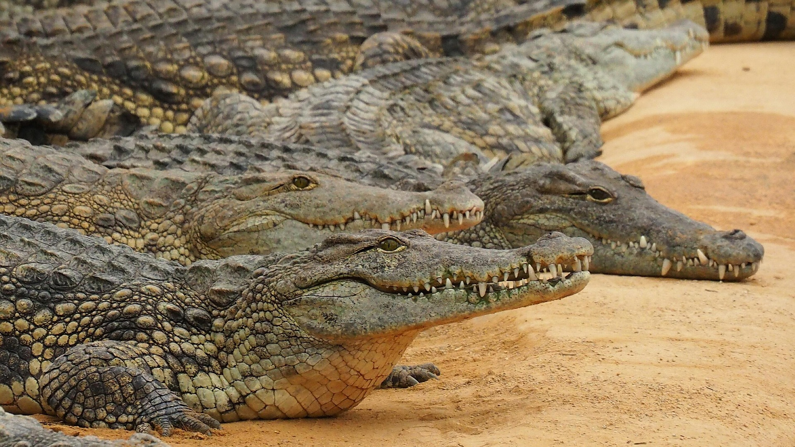

<html>
<head>
    <title>Menú Desplegable</title>
<body 
background="cas.jpg">
    <style>
          
    body { font-family: Arial, sans-serif; }
    
    .menu { margin: 0; padding: 0; list-style: none; }
    .menu li { float: left; position: relative; width: 150px; background-color: #333; }
    .menu li a { display: block; padding: 15px; color: white; text-decoration: none; text-align: center; }
    .menu li a:hover { background-color: #555; }

    .submenu { display: none; position: absolute; top: 100%; left: 0; margin: 0; padding: 0; list-style: none; }
    .submenu li { background-color: #444; width: 100%; }
    
    .menu li:hover > .submenu { display: block; }
 
    </style>
</head>
</html>
<body>

    <ul class="menu">
        <li><a href="#">Peces</a>
            <ul class="submenu">
                <li><a href="https://www.fishipedia.es/pez/betta-splendens">Pez Betta</a></li>
                <li><a href="https://www.fishipedia.es/pez/holacanthus-ciliaris">ángel reina</a></li>
                <li><a href="https://www.fishipedia.es/pez/hyphessobrycon-eques">Tetra serpae</a></li>
                <li><a href="https://www.tomscatch.com/es/especies-de-peces/marlin-blanco-11">Marlin Blanco</a></li>
                <li><a href="https://www.fishipedia.es/pez/hyphessobrycon-erythrostigma">Megalamphodus</a></li>
            </ul>
         </li>
        <li>
            <a href="#">Mamiferos</a>
            <ul class="submenu">
                <li><a href="gorila.html">Gorila</a></li>
                <li><a href="lemur.html">Lemur</a></li>
                <li><a href="caballo.html">Caballo</a></li>
                <li><a href="armadillo.html">Armadillo</a></li>
                <li><a href="reno.html">Reno</a></li>
            </ul>
        </li>
        <li><a href="#">Anfibios</a>
            <ul class="submenu">
                <li><a href="anfi2.html">Anfibios</a></li>
            </ul>
        </li>
        <li><a href="#">Aves</a>
            <ul class="submenu">
                <li><a href="https://www.nationalgeographicla.com/animales/loros">Loro</a></li>
                <li><a href="https://www.faunia.es/planea-tu-visita/animales/tucan-toco">Tucan Toco</a></li>
                <li><a href="https://deanimalia.com/selvaaguilafilipina.html">Águila Monera</a></li>
                <li><a href="https://aveschile.cl/picaflor-2/">Colibrí de Arica</a></li>
                <li><a href="https://laberintoenextincion.blogspot.com/2009/10/maca-tobiano.html">Macá Tobiano</a></li>
            </ul>
         </li>
         <li><a href="#">Reptiles</a>
        <ul class="submenu">
                <li><a href="coco.html">Cocodrilo De Agua Salada</a></li>
                <li><a href="torta.html">Tortuga gigante de galapagos</a></li>
                <li><a href="komodo.html">Dragon De Komodo</a></li>
                <li><a href="cama.html">Camaleon</a></li>
                <li><a href="ser.html">Serpiente De Cascabel</a></li>
            </ul>
         </li>
         <li><a href="index.html">Menu Principal</a>
         </li>
    </ul>

</body>
</html>

<html>
<head><title>Cocodrilo</title></head>
<body
 background="ma.jpg" text="white">
<center><font face="times new romans"><h2><marquee bgcolor="green" height="50" width="75%">Cocodrilo De Agua Salada</marquee></h2></font></center> 
<center><h3><font face="calibri" color="red">(Crocodylus porosus)</font></h3></center>
<center></center>
<center><h4>El cocodrilo de agua salada (Crocodylus porosus) habita principalmente en zonas costeras, estuarios, manglares, ríos y pantanos desde el sudeste asiático hasta el norte de Australia. Es una especie altamente adaptable que tolera agua salada y salobre, moviéndose entre el mar y ríos de agua dulce, prefiriendo desembocaduras.</h4></center><p>
<center><h3>Caracteristicas</h3></center>
<ol type="1">
 <li>Tamaño y Peso: Los machos adultos miden comúnmente entre 3.5 y 6 metros, pesando de 200 a 1000 kg. Las hembras son más pequeñas, rondando los 3 metros</li>
 <li>Hábitat y Distribución: Habitan en manglares, ríos y estuarios del sudeste asiático y norte de Australia. Son capaces de viajar largas distancias en el mar abierto.</li>
 <li>Fisiología Adaptada: Poseen glándulas en la lengua para eliminar el exceso de sal. Su piel, gruesa y acorazada, tiene un color verde oliva o grisáceo, más oscuro en adultos.</li>
 <li>Caza y Dieta: Son depredadores de emboscada. Utilizan la "caza de espera" para atacar a presas como peces, mamíferos, ganado e incluso tiburones.</li>
 <li>Reproducción: Son ovíparos. El sexo de las crías se determina por la temperatura del nido, siendo los machos producidos en temperaturas moderadas (31-33 °C).</li>
</ol>
</body>
</html>

